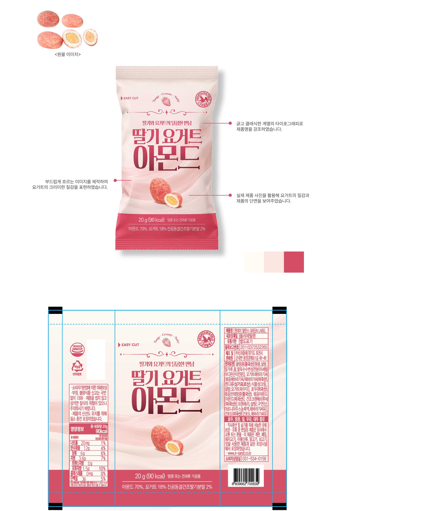

산과들에 아몬드 패키지 디자인
딸기의 상큼함과 요거트의 부드러움을 클래식한 타이포그래피와 이미지로
시각화하였습니다.
프리미엄 간식의 이미지를 표현하고자 했습니다.
Design Request
1. 기존 견과류 제품과 차별화되는
프리미엄 이미지
2. 딸기와 요거트의 풍미를 시각적으로 전달
3. 실제 제품 이미지 사용으로 상품의 특징과 신뢰도 강화
Design Concept
Classic Sweetness
딸기의 상큼함과 요거트의 크리미한 질감을 배경의 액체 이미지로
은은하게 표현했습니다.
부드러운 핑크 계열의 색상과, 장식적인 타이포그래피를 사용하여
세련되면서도 달콤한 디저트를 표현했습니다.
